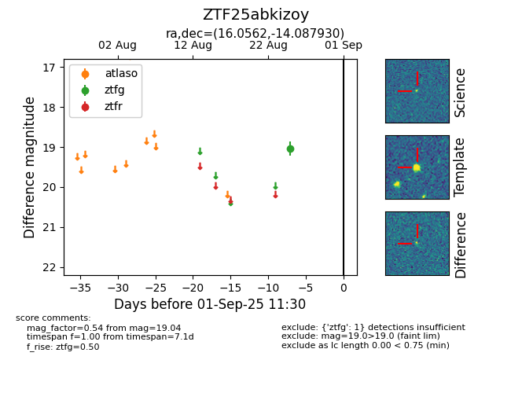

FINK: ZTF25abkizoy
Lasair: ZTF25abkizoy
ALeRCE: ZTF25abkizoy
ZTF25abkizoy (ztf,fink)
equatorial (ra, dec) = (16.0562,-14.08793)
galactic (l, b) = (136.4516,-76.62287)

last ztfg=19.04
1 ztfg detections